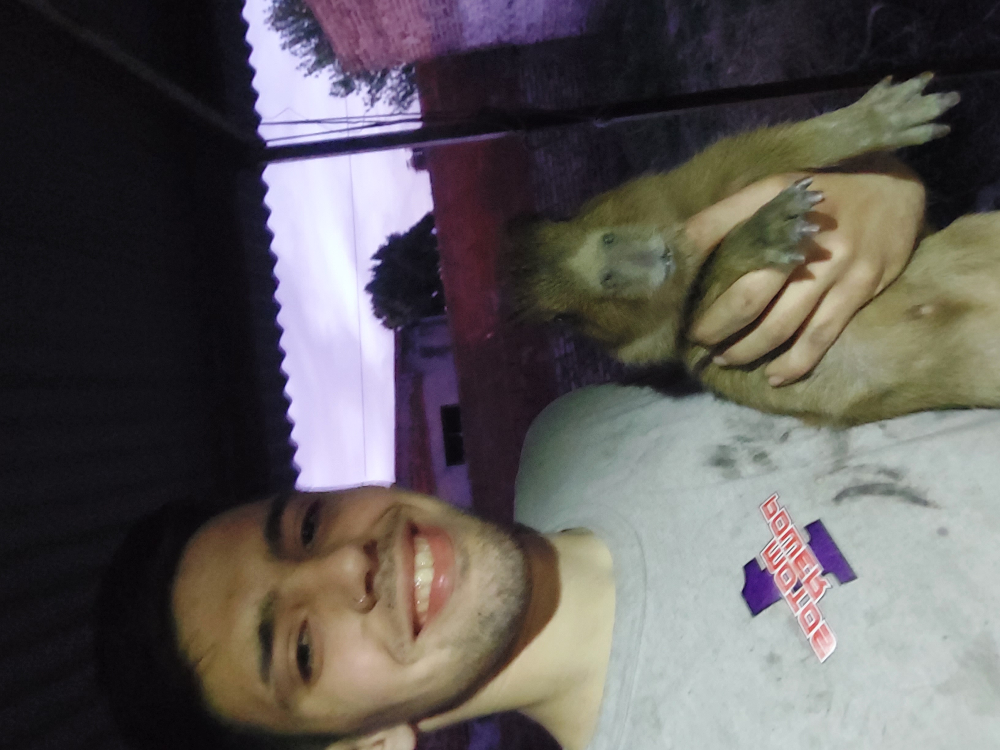

Hola, es un gusto que me estes leyendo y asi poder presentarme. Me llamo Francisco Nicolas, conocido como "Nico" por mis amigos; cumpli 19 años el 14 de Febrero. Soy alguien que siempre trata de aprender lo mas que pueda de cualquier persona o situacion y cada problema con el que me encuentro se convierte en un desafio para mi el encontrar la forma de resolverlo de la forma mas eficiente posible. Intento ser alguien que disfruta de sonreir mucho y jugar futbol o juntarme con amigos. Naci, creci y vivo en San Pedro Bs As salvo 2 años de jardin que realize en posadas misiones.
Mis estudios primarios fueron completamente realizados en la escuela de educacion primaria N*6 de San Pedro, Bs As; premiada como la mejor de el pais en 2022
Mis estudios secundarios se efectuaron en la escuela de educacion secundaria tecnica N*1 de San Pedro, Bs As; obteniendo el titulo de Tecnico Quimico.
Actualmente estoy cursando una diplomatura en desarrollo web, muy interesante y amplia. Utilizando el metodo online lo estoy realizando en la UTN BA.
Ademas, estoy concurriendo a este curso de forma online tambien en la UTN BA; pero este de diseño grafico con base en Photoshop e Illustrator.
Concurri durante 6 años de mi niñes a un instituto privado de ingles y tengo un gran manejo de el idioma aunque no lo suela hablar.
Si no lo descubriste, con gusto te ayudo; estoy un poco obsesionado en aprender y desarrollar conocimientos e alli el motivo de que estoy comenzando clases de italiano, ya que fuera de los 2 idiomas mas importantes es el que mas me agrada y gusta.
Asi es, tambien. El año pasado me recibi de tecnico quimico, me anote para rendir el CBC en campana en la UTN FRD en forma libre, luego de realizar todos los trabajos en 3 meses durmiendo menos de 6 horas al dia y presentarme a rendir con la mayor emocion de el mundo, tal que un pequeño niño. Volvi decepcionado por la gran desorganizacion, que me hicieran viajar por nada un dia y que practicamente "me agarren para la joda" como decimos en criollo luego de desaprobarme de rara manera en la prueba en la que mejor me fue y no me supieran solucionar el tema. Verdaderamente fue un golpe muy duro ya que no queria perder un año por una materia de un cuatrimestre y la falta de organizacion de la facultad, pero trabajar y estudiar y cumplir mis sueños tan pronto me enseñaron a nunca bajar los brazos; por eso estoy aprovechando este año para explayar mis capacidades en cosas relacionadas con lo que me gusta.
Estoy anotado en la UTN SN para cursar este año, trata de programacion de aplicaciones industriales en diferentes idiomas.
Mi papa abrio un taller mecanico y como todo comienzo fue muy duro, en mi tiempo fuera de la escuela me dedicaba a ayudarlo.
Mi abuelo tiene una muebleria y cuando comenzo la pandemia las ventas online se dispararon y como estabamos encarrados sin trabajar el me pidio mi ayuda y estuve 3 meses aproximadamente encargado de las ventas con 16 años, vendiendo aprox 2 millones de pesos mensuales con un usd a 100 pesos.
Mi trabajo actual, el que me acompaña hace 3 años y me enseño muchas cosas ademas de arreglar motos, aprendi de todo, que hacer y que no, compra y venta de automotores. Dominio completo de problemas electricos en motocicletas y nautica. Cabe destacar que son 3 años ininterrumpidos y que hasta que se me haga imposible me interesa seguir tabajando de esto, aca, con mi tio.
Siento que me encuentro muy bien con la definicion de alguien que tiene un deseo momentaneamente insciable de crecimiento y aprendizaje; atrapado en el eterno bucle sin salida de encontrar una mejor version mia, pero luego de eso pretender una mejor y asi sucesivamente. Ademas tengo un carpinchito.
Mi Instagram: nico_hernandorenaa
Mi Facebook: Nico Hernandorena
Mi Whatsapp: 3329302325
Mi Mail: fnhernandorena@gmail.com